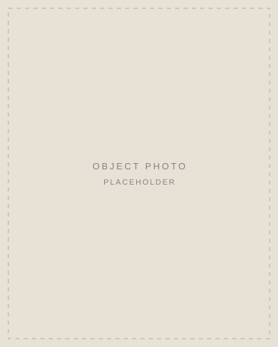

Executive coaching · Kinetic Insights
At the executive level, results move through relationships.
✦
Before I coached executives, I was one. Today I work with CEOs, division presidents and senior executives who want to be challenged by someone who has done the job.
Become the leader others come to with their questions.

Who I work with
CEOs, division presidents and senior executives in mid-sized companies. The engagement is almost always sponsored by the company.
- i.
A fast start in a new role
The first months decide how your board, your peers and your team will see you. We make sure you lead the role from the start.
- ii.
Preparing for the next role
The role ahead asks for presence, judgement and relationships you build before you need them. We build them now.
A good signal: how quickly you say yes to a 360.
Not the right fitCases sent by HR or a boss to fix someone, startups, non-profits, first-time leaders, and anyone unwilling to look at their blind spots.
“I don't tell you what to do. I ask the hard questions that challenge how you normally operate. The work between our sessions belongs to you.”
Gail Froelicher
Presence
Before you lead the room, notice what happens in you.
Executives are trained to act fast. The leaders people follow have learned one more thing: to notice what happens in them before they speak, and to choose a different response.
In a board meeting, a negotiation or a hard conversation, that choice changes the outcome. It is the difference between pushing a decision through and bringing people with you.
Presence is a skill. It can be learned.
Notice.What happens in you
Pause.Before you speak
Choose.A different response
In the boardroom
He learned to sit back.
Story: Gail to approve before publishingAn executive at a Fortune 50 company flooded his board meetings with ideas. Together we looked at what happened in him before he spoke: a racing pulse, and the way he leaned forward into the table.
He learned to sit back and breathe. A year later he told me it was the most important thing he had learned.
Case study · Utilities
From executive to division president.
A newly appointed division president wanted a presidential mindset and a network into the legislature and his industry.
The turn
“What I need.”“What matters to you?”
He used to call people about what he needed. Over our work he started asking what mattered to them. That built relationships and goodwill for his region, and two years later he pushed through a price increase other divisions had failed at.
“One client stopped calling people about what he needed and started asking what mattered to them. Two years later, that was worth $20M to his company.”Gail Froelicher

My story
I have sat in your chair.
- i.
Sales
I started by selling card terminals to American Express. I grew that account from nothing to a million dollars a month by asking one question: “What do you need?”
American Express story: Gail to approve - ii.
Leadership
I was the European Division President for a technology company, sat on the executive committee for four acquisitions and raised venture capital on Sand Hill Road. Twice I closed the largest deal in company history.
- iii.
Coaching
For twenty years I have coached executives and their teams, more than 4,000 hours.
The engagement
Nine months, one direction.
Two 90-minute sessions a month, and the work you do in between. The line does not only rise. Around month seven, stress pulls everyone back to old habits. That is where the new way learns to hold.
Months 1 to 2
Baseline
A 360, the goals that matter, and often a conversation with your sponsor.
Month 3
Commit
How you want to do the work, and what you are willing to change.
Months 4 to 5
Stretch
Your norm gets challenged and you show up differently.
Month 6
Notice
You see what has shifted, and so do the people around you.
Months 7 to 8
Anchor
Stress pulls everyone back to old habits. We make the new way hold.
Month 9
Go forward
Your plan to keep growing, without a coach.
The waitlist
A small practice, by design.
I work with a limited number of executives at a time. Places open as engagements close. If you would like to be considered, put your name on the list.
Places in the practice Number of places: Gail to confirm
Get on the waitlistUnder a minute. An assistant can fill it in.
- i.
You put your name on the list
A few questions about where you are right now. Under a minute.
- ii.
I read every request myself
If it looks like a fit, I invite you to a private conversation.
- iii.
A place opens
New engagements start as current ones close. I will let you know when yours does.